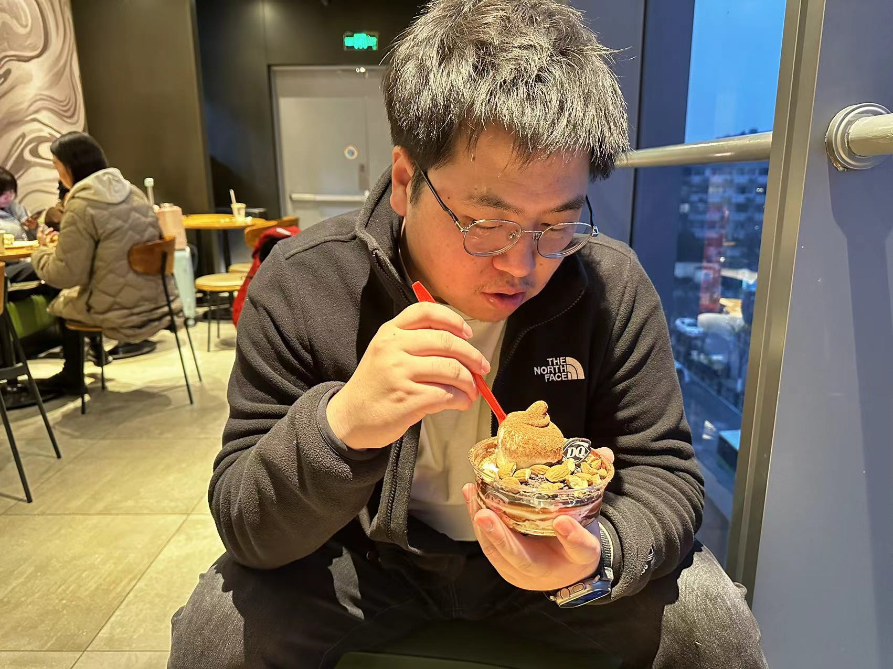

Jiashen Hua (华佳燊)
Email: jiashen.hjs@alibaba-inc.com / jiashenhzju@gmail.com
Senior Algorithm Expert | Tongyi Lab
I obtained my M.S. and B.S. from Zhejiang University in 2019 and 2016, in the Machine Vision and Navigation Lab with Prof. Zhiyu Xiang and Assoc. Prof. Xiaojin Gong.
My current work focuses on multimodal large language models, spanning frontier research and large-scale industrial deployment.
- multimodal representation: establishing a unified, omni-modal representation space across text, image, video, and audio.
- multimodal reasoning & agent: advancing agentic vision by integrating multimodal chain-of-thought with active visual understanding, driving the transition from passive perception to goal-oriented action.

🔥🔥🔥 I am always looking for self-motivated interns tailored to these topics. Feel free to reach out!
News
- [2026/02] One papers accepted by CVPR 2026.
- [2026/01] One papers accepted by ICLR 2026 oral, top 1.18%.
- [2025/08] One papers accepted by TMM 2025.
- [2024/10] One papers accepted by ACM MM 2024.
- [2022/03] One papers accepted by CVPR 2022.
- [2021/12] One papers accepted by CVPR 2021 RVSU Workshop.
- [2019/04] Joined Alibaba Damo Academy as a Research Scientist.
Selected Publications
(*Corresponding Author, †Project Lead)
-

-
 Illuminating Visual Identity in Universal Multimodal Embeddings| Code
Illuminating Visual Identity in Universal Multimodal Embeddings| Code -

-
 A normalized convolutional neural network for guided sparse depth upsampling
A normalized convolutional neural network for guided sparse depth upsampling
Honors & Awards
- 🏅 Future City Awards, "Novel Perception and Simulation Platform Driven by Urban Digital Twins". 2023
- 🏆 Winner, CVPR 2021 Robust Video Scene Understanding (RVSU) Challenge. 2021
- 🏆 Winner, CVPR 2019 The 1st Learning from Imperfect Data (LID) Challenge. 2019
- Outstanding Graduate Student, Zhejiang University. 2017
This webpage template is stolen from Jon Barron